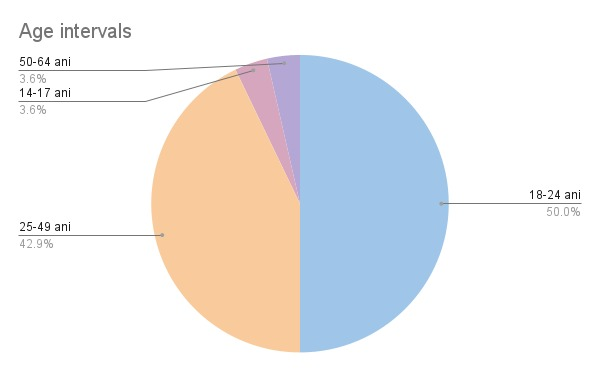
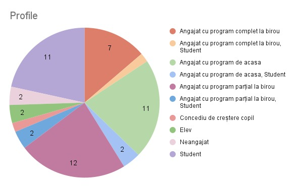
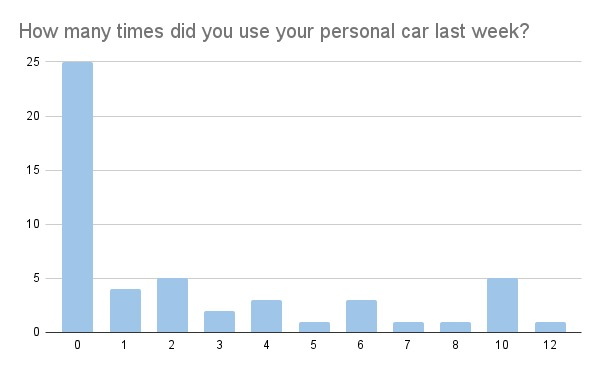
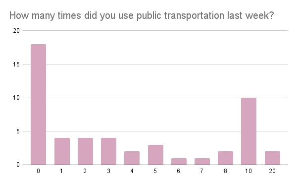
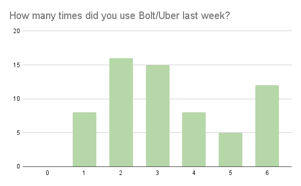
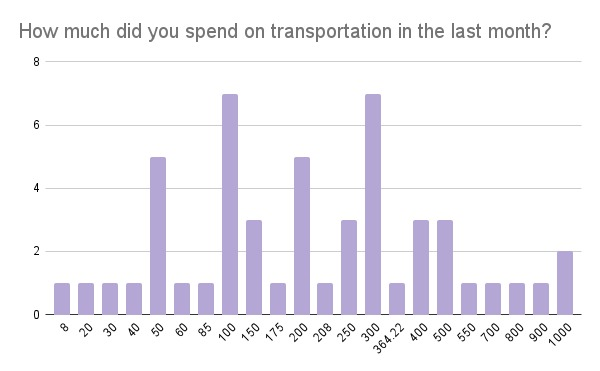
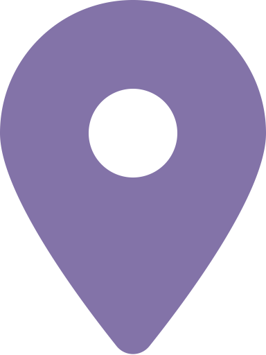
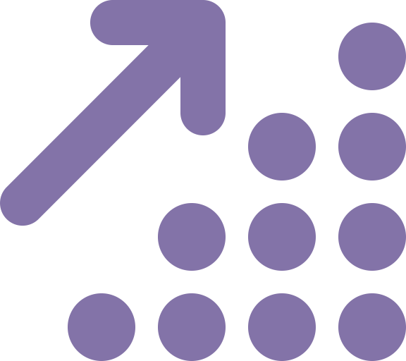

Micuda Andrei
Product Manager
andrei.micuda@stud.acs.upb.ro
Borta Adina
UI Designer & Frontend Engineer
adina_ioana.borta@stud.acs.upb.ro
Voicu Bianca
Backend Engineer
bianca_oana.voicu@stud.acs.upb.ro
Harles Mihai
Technical Lead
serban_mihai.harles@stud.acs.upb.ro
Ciopa Cristian
Marketing Specialist
cristian.ciopa@stud.acs.upb.ro
The problem
Bucharest, faces a growing challenge that plagues its residents daily - urban congestion. The
averagte citizen spends about 277 hours each year in traffic. With more cars on the road
than ever before, getting from point A to point B can be a nightmare, not to mention the
environmental impact of all those vehicles. Urban congestion in Bucharest is reaching
critical levels. Rush hours are a nightmare, parking is scarce, and the time and money spent
on daily commutes are skyrocketing. Bucharesters waste precious hours stuck in traffic,
leading to increased stress and decreased quality of life.
Our solution
Introducing Carpool Buddy, the game-changer in Bucharest's transportation landscape. Our
carpooling application is designed to tackle the city's traffic woes and make daily
commuting easier. Here's how:
-
Community-Driven Carpooling: Your app connects riders and drivers
traveling short distances in Bucharest. Users can easily find others going the same
way and share rides, effectively reducing the number of cars on the road.
-
Easy and Convenient: We've designed an intuitive and user-friendly
app that makes it simple for commuters to find and book rides, ensuring a seamless
experience for everyone.
-
Cost-Efficiency: Carpooling helps users save money on fuel,
parking, and maintenance while contributing to a greener environment. The more you
share, the more you save!
-
Reduce Traffic and Emissions: By encouraging shared rides, we're
actively working to reduce traffic congestion and decrease the carbon footprint in
Bucharest. It's a win-win for both commuters and the environment.
Customer Segments
Bucharest has over 2 million residents, and the urban congestion problem affects every one of
them. As people look for convenient and sustainable transportation solutions, Carpool Buddy
is perfectly positioned to capture a significant share of this growing market.
Segment: Bucharest Commuters
Demographics: Adults aged 25-55, residing in or near Bucharest.
Psychographics: Daily city commuters, environmentally conscious,
traffic-weary.
Needs: Efficient daily transportation, cost-effective alternatives, reduced
stress during rush hours.
Segment: Students and Young Professionals
Demographics: College students and young adults aged 18-25 living in
Bucharest.
Psychographics: Budget-conscious, smartphone-dependent, eco-friendly
mindset.
Needs: Affordable rides for campus commutes and work, flexible scheduling,
connecting with peers.
Segment: Eco-Minded Urban Dwellers
Demographics: Adults aged 25-50, residing in urban areas of Bucharest.
Psychographics: Strong environmental values, a desire to reduce emissions,
minimal car ownership.
Needs: Eco-friendly transportation options, carbon footprint reduction,
community engagement.
Segment: Tourists and Weekend Explorers
Demographics: Visitors of all ages exploring Bucharest's tourist
attractions.
Psychographics: Adventurous, often unfamiliar with local transportation
options.
Needs: Easy access to local transportation, tourist-friendly guides,
budget-friendly options.
Competition & our competitive edge
In our competitive landscape, we face formidable rivals in the form of Bolt, Uber, and
BlaBlaCar. While these competitors may hold an edge in marketing prowess, Carpool Buddy
distinguishes itself with three key advantages:
-
Cost-efficiency and Environmental Responsibility: In contrast to the
competition, our application offers a cost-effective and eco-friendly solution. This
appeals to price-conscious consumers who also prioritize reducing their carbon
footprint.
-
Focus on Shorter Routes and Traffic Mitigation: Our unique emphasis on
shorter routes sets us apart, directly addressing the issue of traffic congestion. This
strategic focus not only saves time for users but also contributes to more efficient
urban transportation.
Key Metrics
- Rides Completed: The total number of rides completed is a fundamental metric, as it
directly reflects the demand for the service.
- Average Revenue per User (ARPU): ARPU helps gauge the average spending per passenger.
It's calculated by dividing the total revenue by the number of users.
- Customer Retention Rate: This metric shows how well the company is at keeping passengers
over time. A high retention rate is often a sign of customer satisfaction.
- Customer Acquisition Cost (CAC): CAC measures the cost of acquiring a new passenger. It
includes marketing, advertising, and promotional expenses.
- Driver Acquisition Cost: Similar to CAC, driver acquisition cost measures how much it
costs to recruit and onboard new drivers.
- Average Trip Distance: Knowing the average trip distance can help with pricing
strategies, fuel efficiency, and driver earnings.
- Cancellation Rate: The percentage of trips that are canceled by either the passenger or
driver. A high cancellation rate can indicate a problem in the system.
- Wait Time: The time passengers have to wait for a ride. Reducing wait times can improve
customer satisfaction.
- Safety Incidents: Tracking incidents and safety complaints is crucial for maintaining a
safe service and ensuring customer trust.
- Rating and Feedback: Monitoring passenger and driver ratings and feedback is essential
for maintaining quality and improving service.
- Environmental Impact: Monitoring and reducing the carbon footprint of the business can
be important for sustainability and public relations.
Cost Structure
- Mobile App Development: Designing and building the mobile application.
- Back-End Development: Building the server, database, and the logic to handle user data
and ride matching.
- Third-party APIs: Integration with mapping, payment processing, and other services.
- Infrastructure Costs:
- Hosting: Costs for app hosting (App Store, Google Play), server infrastructure,
and cloud services.
- Database Costs: Expenses for database hosting, scaling, and maintenance.
- Compliance: Ensuring the app complies with legal and regulatory requirements, such as
GDPR or data protection laws.
- Maintenance and Updates:
- Ongoing Development: Regular updates, bug fixes, and feature enhancements.
- Server Maintenance: Ensuring the app runs smoothly, including server upgrades
and security patches.
- Marketing and User Acquisition:
- Marketing Campaigns: Costs for advertising, social media marketing, and user
acquisition.
- User Support: Handling user inquiries and support.
- Operational Costs:
- Administrative Costs: Overhead costs.
- Customer Support: Costs associated with customer service and support teams.
- Payment Processing:
- Payment Gateway Fees: Transaction fees associated with processing payments for
rides.
Revenue Streams
Percentage of each fare cost
We will receive a cut for each ride completed. Electric cars will benefit from a smaller fee
in order to encourage eco driving.
Corporate Partnerships
Partner with local businesses or corporations to provide carpooling solutions for their
employees. Charge a fee for corporate accounts or offer group packages.
Validation 1
How we identified the problem?
As university students and full-time employees, all team members in Bucharest deal with
traffic issues to some extent. For instance, Andrei spends a minimum of 2 hours commuting
between university and home via the metro.
What we thought was the solution?
We identified car pooling as a possible solution to this issue. The benefits of this solution
are twofold:
- Ease traffic congestion by reducing the number of 1-person cars.
- Provide a middleground solution between public transport and ride-hailing services.
Plan for customer discovery
We focused on 2 main commuter segments:
- Corporate employees
- University students
We selected these two segments as they belong to the category of people that spend a
considerable amount of time with their commute. Another factor was the ease of reaching out
to people belonging to these groups.
The customer validation process
We reached out to various acquaintances that we knew are living on the outskirts of Bucharest
as well, as well as individuals who frequently traverse the urban expanse.
The validation process consisted of a multi-way approach:
- face-to-face interviews
- online form
- one-on-one online communication
Questions asked
All questions posed were derived from the online form (link). The proof to all the interviews
can be found on Google
Drive.
Findings
Face-to-face interviews
Case #1
- Age Group: 25-49
- Works full-time hybrid
- Discussion summary: He goes around town 2-3 times a week, mostly by metro. It takes him
about one half an hour to reach the destinations. He considers that walking is better
than sharing a crowed metro. He shared a car before and is willing to do it again.
Case #2
- Age Group: 25-49
- Works full-time, hybrid
- Discussion summary: She goes around town 5-7 times a week, mostly by car or Uber. It
takes her 30 minutes to an hour to reach the destinations. When going to work, she
drives to work. She would share a ride.
One-on-one online communication
Case #3
- Age Group: 18-25
- Student, full-time employee, only works from home
- Discussion summary: As he does not need to commute back and forth from work, he only
commutes 5-6 times a week. Additionaly, he mostly uses public transport (metro, tram)
and only used Uber/Bolt when in a rush or late at night.
Case #4
- Age Group: 18-25
- Works full-time, on-site
- Discussion summary: He commutes 4 days by metro and 1 day by car. Outside of work
commute, he mostly uses his car for other activities (especially if no metro station is
near). He frequently car pools with friends (as the driver).
Case #5
- Age Group: 18-25
- Works full-time, hybrid
- Discussion summary: She goes around town 2-4 times a week, mostly by metro or Uber. It
takes her about one hour to reach the destinations. She considers the traffic as being
dangerous and chaotic. She shared a car before and is willing to do it again.
Case #6
- Age Group: 18-25
- Works full-time, on site, goes to university on weekends
- Discussion summary: She goes around town 5-6 times a week, mostly by car or metro. It
takes her 30 minutes to an hour to reach the destinations. When going to work, she is
picked up by one of her co-workers. So she shares a car every working day.
Case #7
- Age Group: 25-49
- Employed, works full-time, from home and 2-5 days per month on site
- Discussion summary: We kicked off our discussion with an interesting point: she
primarily works from home, with only 2-5 days a month requiring a 6-minute walk to the
office. Curious about her previous employment, I inquired about the reasons for her job
change. Although it wasn't her primary reason, she mentioned that the extended commute
to her former workplace played a role. This insight shed light on her priorities, as she
brought it up unprompted. I then asked about her use of Bolt, and she revealed that she
turns to Bolt when she's in a hurry or when she wants to avoid switching subway lines.
To conclude, I asked a more direct question: "Would you consider switching from Bolt to
share a ride with someone going to a similar destination, even if it meant a 5-10 minute
walk?" She expressed willingness to accept a 5-minute walk but drew the line at 10
minutes.
Case #8
- Age Group: 25-49
- Employed, works full-time, 3 days from home and 2 days on site
- Discussion summary: He commutes almost exclusively by metro. Only uses Uber/Bolt for
emergencies or when in a rush. He says he would be open to car pooling if it means
saving time during commutes and if the cost is not too high.
Online Form






Main problems during commutes
- 40 out of 52 respondents said that the main problem is the congested traffic.
- 13 out of 52 respondents highlighted problems related to the overcrowding of buses and
irregular public transport schedules.
Alternatives to public transport and cars
- 13 out of 52 respondents used public trasport
- 16 out of 52 respondents used a bike/scooter
- 13 out of 52 respondents tried walking
- 4 out of 52 respondents tried scheduling their commutes around rush hours
Willingness to walk short distances
- Most likely: 38 out of 52 respondents said that they last chose to walk a short distance
within the past week
- Likely: 7 out of 52 respondents said that they last chose to walk a short distance
within the past month
- Unlikely: 6 out of 52 respondents said that they last chose to walk a short distance
more than a month ago
Past car pooling experience
38 out of 52 respondents said that they previously shared a car ride with an acquaintances,
even if not going to the same destination
Willingness to car pool in the future
- Most likely: 24 out of 52 respondents rated their willingness as 5/5
- Likely: 17 out of 52 respondents rated their willingness as 3/5 or 4/5
- Unlikely: 11 out of 52 respondents rated their willingness as 1/5 or 2/5
Validation 1 - Conclusions
These insights have given us more confidence in our solution's ability to address real-life
problems. Additionally, the positive feedback we've received has us ready to move forward
with testing our solution in the market.
Wireframe
Passenger flow
Driver flow
Landing Page
Link.
User Persona
Adrian Neagu
"Young tech visionary, navigating the binary seas."
24 years old

Ilfov
Student, works in IT
About
Adrian, a student who works full time in Bucharest, seamlessly balancing corporate IT work with academic pursuits. Fueled by a passion for all things tech and by his daily black coffee (single origin), he is committed to sustainability, integrating eco-friendly practices into his professional and daily life, striving for a harmonious blend of technology and a greener future.

Goals
-
Commute daily from Ilfov to Bucharest effectevely.
-
Achieve a harmonious balance between personal life, work, and studies.
-
Take strides toward a more sustainable lifestyle.
Frustrations
-
The extended duration spent commuting by bus from home to work or school, involving factors such as traffic, bus changes, and delays.
-
The congestion and lack of parking spots resulting from the high volume of cars in Bucharest.
-
The monthly expenditure on transportation, covering Bolt, Uber, and gas, amounting to 1000 RON.